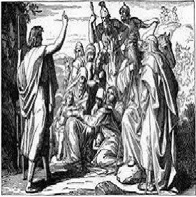
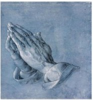

1. The Primitive Period

In the beginning, all was mysterious, terrifying, and wonderful. Man did not understand the origin of earthquakes, lightning, or how the sun got from the west back to the east for sunrise the next morning. Why did plants grow? Why did people get sick and die? People were desperate for answers, which they found according to what seemed most reasonable. Wherever a phenomenon defied natural explanation, some supernatural agency was presumed. Further, people desperately wanted to be able to control these phenomena and so instituted sacrifices and prayers in the belief that these actions could influence the appropriate deities. At this point religion and science were synonymous.
2. The Growth of Science
As knowledge of the physical world increasingly showed non-spiritual causes of phenomena, entrenched religious authorities threatened with a diminution in the scope of their influence reacted forcefully against the “impious” assertions of secular knowledge.
3. The Current State of Affairs
As science continues to advance our understanding of the world and ourselves, the original rationale for religion itself is progressively undermined. Confronted with refutations of core beliefs, religionists have responded in a variety of ways: some modify their beliefs to accommodate science, while some seek alternate realities. Even science has been posited as a religion of sorts by some apologists of faith. In some cases, the entrenched interests of organized religion and social conservatism have instituted a war against science itself and the public schools that bring unwelcome ideas into their communities.
4. The persistence of superstition (i.e., faith, prayer, miracles, etc.)

Why do parents encourage their children to believe in obvious falsehoods: Santa Claus, turning water to wine, the “Virgin” Mary, the gift of tongues? Why do people persist in the belief that prayers are efficacious? Did the people whose house was hit by the tornado not pray hard enough? Besides, isn’t a prayer simply a request that God change his Divine Plan in order to accommodate one’s personal desire? Isn’t it a rejection of “thy will be done”? We will investigate these questions below.
~~~~~~~